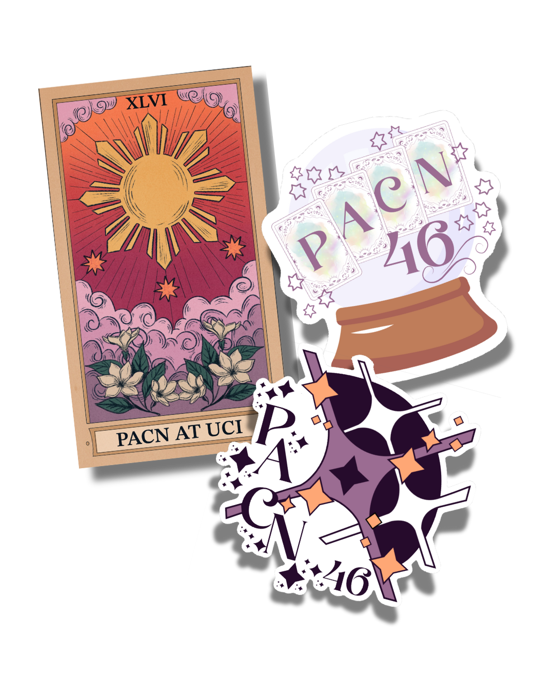
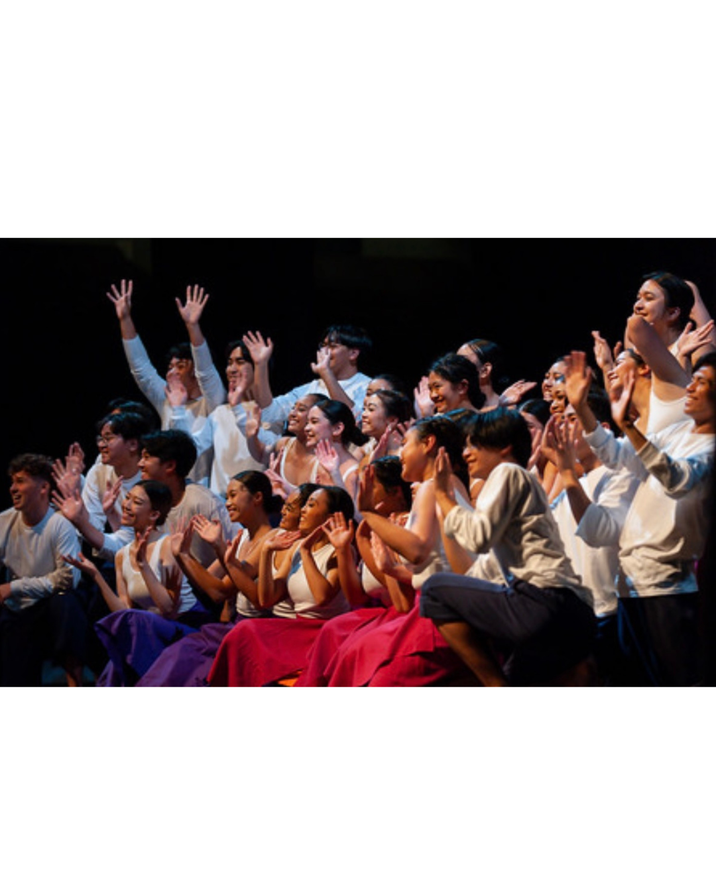

What is PACN?

First started in 1979, PACN is a production where Kababayan at UCI comes together to showcase the issues, lifestyle, and culture of Pilipinx-Americans through cultural dances, music and an original story.
Through PACN, we aim to simultaneously celebrate well-known aspects of the cultures of the Philippines while also highlighting underrepresented communities by interpreting their customs untouched by colonization.
More importantly, PACN embodies the beautifully diverse arts of the Philippines and shows how we choose to embody and embrace that in our current environment.
Through PACN, we aim to simultaneously celebrate well-known aspects of the cultures of the Philippines while also highlighting underrepresented communities by interpreting their customs untouched by colonization.
More importantly, PACN embodies the beautifully diverse arts of the Philippines and shows how we choose to embody and embrace that in our current environment.
MEET THE PACN 46 BOARD & CAST
Kababayan at UCI's Pilipinx-American Culture Night (PACN) is entirely orchestrated by dedicated students who invest significant time and effort not only in entertaining but also in enlightening both our performers and audience about Pilipino culture and the Pilipinx-American identity. Through a vibrant blend of song, dance, and skit, PACN aims not only to celebrate Pilipino culture and identities but also to shed light on pertinent issues facing the Pilipinx-American community.
Our PACN Cast and Board Members have poured countless hours into preparing for this remarkable show. Alongside the production journey, they have deepened their understanding of Pilipinx-American culture and heritage, as well as the surrounding social issues, while forging lasting friendships and connections. Through this journey, we’ve built more than just friendships—we’ve shared in a kind of mahika, creating a family connected by moments of joy, growth, and the magic that made it all unforgettable.

Weekly practices through Winter and half of Spring Quarter
4 Saturday Practices (2 per quarter)
2 Performance Suites Max:
Choir, Maria Clara, Mindanao, Kordilyera, Rural, Skit, Senior, Tribal
1 Logistical Suite Minimum:
Props, Stage, and Production, Cultural Attire, Commercials, Programs, Business & Marketing Committee
How does PACN work?
4 Saturday Practices (2 per quarter)
2 Performance Suites Max:
Choir, Maria Clara, Mindanao, Kordilyera, Rural, Skit, Senior, Tribal
1 Logistical Suite Minimum:
Props, Stage, and Production, Cultural Attire, Commercials, Programs, Business & Marketing Committee